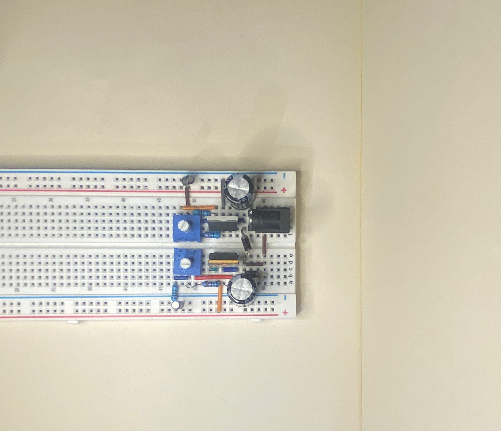
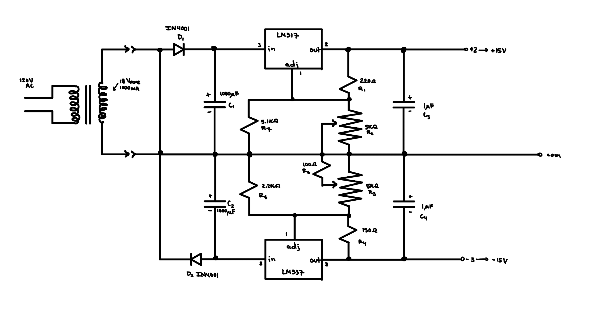

General Purpose Adjustable Bipolar DC Voltage Supply

Adjustable Bipolar DC Voltage Supply Breadboard Setup
Overview
This power supply is designed for delivering variable current while maintaining high
stability. It uses 3-terminal linear voltage regulators and half-wave rectifiers to
provide reliable performance, making it ideal for a variety of electronic projects requiring
bipolar power supplies.
Wiring Diagram

Detailed wiring diagram with pin numbers and component values.
The diagram illustrates the wiring setup for the breadboard, featuring pin numbers and
component values to facilitate easy assembly and testing. The transformer shown as T1
steps down the input AC voltage from 120V AC to 18V RMS (1000 mA capacity).
The transformer provides two AC outputs which will be used to generate both positive
and negative voltage rails.
Components and Their Functions
D1 and D2 (1N4001 diodes): Act as rectifiers in a half-wave configuration.
D1 handles the positive half-cycles, and D2 handles the negative half-cycles of the AC
signal from the transformer, converting the AC signal into pulsating DC signals.
C1 and C2 (1000 µF electrolytic capacitors): Smooth the pulsating DC
signals to produce a more stable DC voltage. They reduce the ripple
voltage before it reaches the regulators.
C3 and C4 (1 µF capacitors): Placed at the output of the LM317
and LM337 regulators to improve stability and reduce high-frequency noise.
TI recommends that the input terminal be bypassed to ground with a bypass capacitor,
with optimal placement closest to the input terminal of the device and the system GND.
LM317: An adjustable positive voltage regulator for the positive
voltage side of the circuit. It has three pins: IN, OUT, and ADJ (adjustment pin for
controlling the output voltage).
LM337: The counterpart for the negative rail, an adjustable negative voltage
regulator.
R1, R2, and R7 (positive rail): Create a voltage divider. R1 is a fixed
resistor, while R2 is a 5k potentiometer that adjusts the output voltage. R7, which is
in parallel with R2, fine-tunes the adjustment range of R2.
R4, R3, and R5 (negative rail): Create a similar voltage divider
for the negative voltage adjustment.
R6: Sets the lower bound for the negative rail at about -3V.
The final output of this power supply can be fine-tuned to provide adjustable voltages
in the range of approximately +/- 3V to +/- 16V, making it highly versatile for various
electronic applications and testing scenarios.
Technical Specifications
Input: 120V AC
Output: Adjustable +/-3V to +/-16V DC
Current Rating: Up to 250mA
Regulation: 3-terminal linear voltage regulators
Ripple Rejection: High, due to capacitive filtering